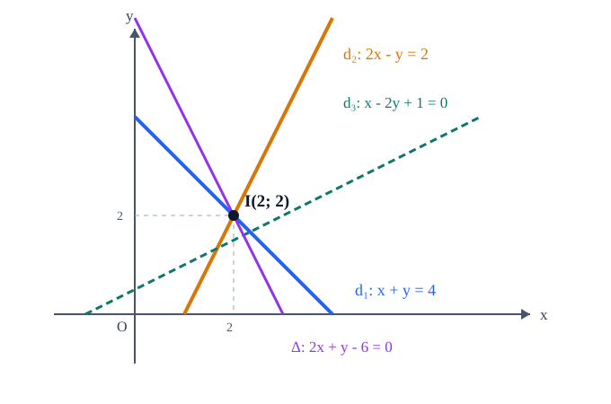
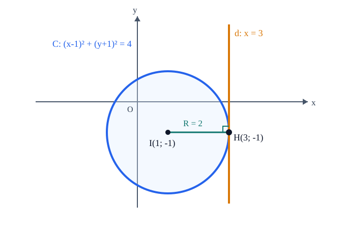
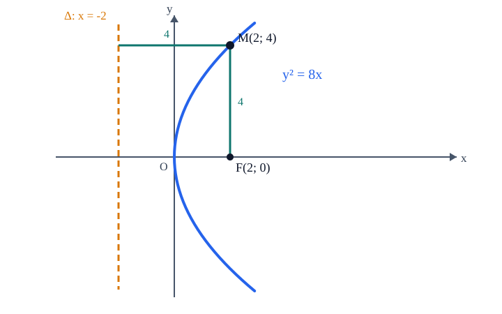

HỌC THEO CHUYÊN ĐỀ · CĐ14 · TOÁN THPT
Khám phá thêm: Mô hình trực quan Chuyên đề 14 (tùy chọn).
Kiến thức
Một con đường thẳng, một vành tròn hay mặt cắt chảo ăng-ten đều có thể được mô tả bằng tọa độ. Chuyên đề này đưa em đi từ điểm và vectơ đến đường thẳng, đường tròn, elip, hypebol và parabol. Mỗi khái niệm được giải thích từ hình dung ban đầu rồi mới đến công thức, ví dụ và phần em tự làm.
Mỗi mạch bắt đầu bằng một tình huống quen thuộc, sau đó em tự hình thành quy tắc và thử một câu ngắn trước khi xem cách giải. Nếu còn vướng, hãy quay lại điều kiện hoặc hình minh họa ngay trong mục đó.
1. Phương trình đường thẳng
Một điểm xác định vị trí, nhưng chưa xác định một đường thẳng. Từ hướng của vectơ và điều kiện vuông góc, ta xây dựng được phương trình đường, kiểm một điểm nằm trên đường và mô hình hóa sự thay đổi đều.
1.1. Vectơ chỉ phương và pháp tuyến của đường thẳng
Muốn vẽ đường giao thông không chỉ biết một điểm nằm trên đường, mà còn phải biết đường đi theo hướng nào.
Một đường được nhận ra bằng hướng dọc theo nó; hướng vuông góc cho ta một phép kiểm dễ tính bằng tích vô hướng.
ĐỊNH NGHĨA — Vectơ chỉ phương và pháp tuyến của đường thẳng. Nhớ vectơ là một độ dời có hướng. Vectơ chỉ phương \(\vec u\ne\vec0\) song song đường thẳng; pháp tuyến \(\vec n\ne\vec0\) vuông góc đường thẳng. Với \(ax+by+c=0\), \((a,b)\ne(0,0)\), có thể chọn \(\vec n=(a,b)\) và \(\vec u=(-b,a)\). Hai vai trò khác nhau, không được tự hoán đổi.
Ví dụ
Đề bài: Cho \(d:2x-y+3=0\). Hãy nêu một vectơ pháp tuyến, một vectơ chỉ phương và kiểm tra quan hệ của chúng.
Lời giải: Hệ số của \(x,y\) cho \(\vec n=(2,-1)\ne\vec0\). Chọn \(\vec u=(1,2)\ne\vec0\). Ta có \(\vec n\cdot\vec u=2\cdot1+(-1)\cdot2=0\), nên \(\vec u\) song song đường thẳng.
Vận dụng
Đường \(3x+2y-1=0\) có một vectơ chỉ phương nào?
Đối chiếu
Có thể chọn (−2,3), vì (3,2)·(−2,3)=0. **Nếu làm sai:** Nếu lấy (3,2) làm chỉ phương, bạn đã nhầm với pháp tuyến; kiểm tích vô hướng. **Kiểm lỗi** Nếu em lấy (3,2) làm chỉ phương cho đường 3x+2y−1=0, đọc **Kiến thức 1.1** để tách vai trò pháp tuyến/chỉ phương. Làm **Bài luyện 1** và **Bài luyện 17**, kiểm tích vô hướng bằng 0.1.2. Lập phương trình tổng quát từ điểm và pháp tuyến
Một điểm P và vectơ pháp tuyến đã đủ xác định đường thẳng, vì mọi vectơ từ P tới điểm khác trên đường đều vuông góc pháp tuyến.
Điểm đã biết giữ đường đi đúng vị trí, còn pháp tuyến giới hạn độ dời của mọi điểm nằm trên đường.
PHƯƠNG PHÁP — Lập phương trình tổng quát từ điểm và pháp tuyến. Nếu P(x₀,y₀), n=(a,b)≠0, điểm M(x,y) nằm trên đường khi n·PM=0. Do đó \(a(x-x_0)+b(y-y_0)=0\), rồi thu gọn thành \(ax+by+c=0\). Hệ số a,b không được đồng thời bằng 0.
Ví dụ
Đề bài: Qua \(P(1,-2)\), viết phương trình đường thẳng có pháp tuyến \(\vec n=(2,3)\). Kiểm lại điểm đã cho.
Lời giải: Với \(M(x,y)\) trên đường, \(\overrightarrow{PM}=(x-1,y+2)\) và \(\vec n\cdot\overrightarrow{PM}=0\), tức \(2(x-1)+3(y+2)=0\). Rút gọn \(2x+3y+4=0\). Thế \(P\): \(2-6+4=0\), đúng.
Vận dụng
Qua P(2,3), có pháp tuyến n=(1,−2). Viết phương trình đường thẳng.
Đối chiếu
\(x-2-2(y-3)=0\), tức \(x-2y+4=0\). **Nếu làm sai:** Nếu phương trình không đi qua P, thay tọa độ P để tìm sai dấu trước. **Kiểm lỗi** Nếu phương trình không qua P(2,3), đọc **Kiến thức 1.2** về n·PM=0. Làm **Bài luyện 2** rồi **Bài luyện 18**, thay tọa độ điểm vào phương trình để phát hiện sai dấu.1.3. Lập phương trình tham số
Đường thẳng gồm các vị trí xuất phát từ A và dịch chuyển một lượng bất kỳ t theo vectơ chỉ phương u.
Khi một vật chạy dọc hướng cố định, cùng một tham số phải đồng thời mô tả thay đổi của cả hoành độ và tung độ.
PHƯƠNG PHÁP — Lập phương trình tham số. Với A(x₀,y₀), u=(u₁,u₂)≠0, \((x,y)=(x_0,y_0)+t(u_1,u_2)\), t∈ℝ; nghĩa là \(x=x_0+u_1t\), \(y=y_0+u_2t\). Phương trình tham số không phải hai đường riêng rẽ; một t chung phải thỏa cả x và y.
Ví dụ
Đề bài: Đường thẳng qua \(A(-1,2)\) có chỉ phương \(\vec u=(3,-2)\). Viết phương trình tham số và tìm vị trí ứng với \(t=2\).
Lời giải: Từ \((x,y)=(-1,2)+t(3,-2)\), suy ra \(x=-1+3t,\ y=2-2t\), \(t\in\mathbb R\). Khi \(t=2\) ta được \((5,-2)\). Cùng một \(t\) chi phối cả hai tọa độ.
Vận dụng
Qua A(1,−1), u=(2,3), tìm tọa độ điểm ứng với t=2.
Đối chiếu
M=(5,5). Dùng cùng t=2 ở cả hai tọa độ. **Nếu làm sai:** Nếu thay t khác nhau cho x và y, bạn đã bỏ mất điều kiện một tham số chung. **Kiểm lỗi** Nếu dùng hai giá trị t khác nhau cho x,y, đọc **Kiến thức 1.3**: một điểm trên đường tương ứng một tham số chung. Làm **Bài luyện 3** và **Bài luyện 19**, thế t vào cả hai tọa độ.1.4. Phương trình đường thẳng qua hai điểm
Khi biết hai vị trí A và B, chính vectơ AB là hướng của đường đi; không cần đo góc với trục.
Hai vị trí khác nhau cho một vectơ dịch chuyển khác không. Chỉ cần đổi vectơ ấy thành pháp tuyến là đủ viết phương trình.
PHƯƠNG PHÁP — Phương trình đường thẳng qua hai điểm. Với A≠B, u=AB=(x_B−x_A,y_B−y_A) là chỉ phương khác 0. Chọn n=(−u_y,u_x) hoặc (u_y,−u_x) để viết phương trình tổng quát. Nếu A=B, một điểm không đủ xác định duy nhất một đường thẳng.
Khi đường thẳng cắt cả hai trục tại \(A(a,0)\) và \(B(0,b)\) với \(ab\ne0\), ta không cần giải lại hệ để viết phương trình. Điều kiện đường đi qua hai điểm cho phép đưa về dạng gọn: [ \frac{x}{a}+\frac{y}{b}=1. ] Đây là phương trình đường thẳng theo đoạn chắn: \(a\) và \(b\) chính là hoành độ và tung độ giao trục, có thể âm. Chỉ dùng khi hai đoạn chắn khác 0; trường hợp đường đi qua gốc cần cách viết khác.
Ví dụ minh họa. Đường qua \(A(4,0)\), \(B(0,-2)\) có dạng \(\frac{x}{4}+\frac{y}{-2}=1\), tương đương \(x-2y-4=0\). Thế \(A,B\) đều cho 0. Nếu viết \(x/4+y/2=1\), em đã bỏ dấu âm của giao với \(Oy\); hãy đối chiếu trước khi rút gọn.
Ví dụ
Đề bài: Viết phương trình tổng quát của đường thẳng qua \(A(1,1)\) và \(B(3,5)\).
Lời giải: Vì \(A\ne B\), \(\overrightarrow{AB}=(2,4)\) là chỉ phương. Chọn pháp tuyến \(\vec n=(2,-1)\) do tích vô hướng bằng \(4-4=0\). Qua \(A\): \(2(x-1)-(y-1)=0\), tức \(2x-y-1=0\). Thế \(A,B\) đều được 0.
Vận dụng
Qua A(0,2), B(2,0), viết phương trình đường.
Đối chiếu
\(x+y-2=0\). Kiểm thế hai điểm đều cho 0. **Nếu làm sai:** Nếu ra x−y−2=0, bạn chưa kiểm cả hai điểm thuộc đường. **Kiểm lỗi** Nếu đường vừa lập không chứa cả hai điểm, đọc **Kiến thức 1.4** để dùng vectơ AB làm chỉ phương. Làm **Bài luyện 4** và **Bài luyện 20**, kiểm trực tiếp hai điểm.1.5. Kiểm tra điểm thuộc đường thẳng
Không phải điểm nào vẽ gần nét thẳng cũng thuộc nó. Phương trình biến kiểm tra hình thành phép tính chính xác.
Phương trình đường là một điều kiện đúng hoặc sai cho từng cặp tọa độ; phép thay số kiểm điều ấy trực tiếp.
TÍNH CHẤT — Kiểm tra điểm thuộc đường thẳng. Điểm M(x₀,y₀) thuộc \(ax+by+c=0\) khi và chỉ khi \(ax_0+by_0+c=0\). Với phương trình tham số, phải tồn tại một giá trị t chung thỏa cả hai tọa độ. Dùng thay số để kiểm nghiệm kết quả của mọi bài toán dựng đường.
Ví dụ
Đề bài: Với \(d:2x+y-5=0\), hãy xét \(M(2,1)\) và \(N(1,1)\) có thuộc \(d\) hay không.
Lời giải: Điểm thuộc đường khi biểu thức bằng 0. Với \(M\): \(2\cdot2+1-5=0\), nên \(M\in d\). Với \(N\): \(2\cdot1+1-5=-2\ne0\), nên \(N\notin d\).
Vận dụng
Điểm (−1,3) có thuộc \(x+2y-5=0\) không?
Đối chiếu
Có, vì −1+6−5=0. **Nếu làm sai:** Nếu chỉ nhìn hình hoặc kiểm một tọa độ, hãy viết đầy đủ biểu thức bên trái. **Kiểm lỗi** Nếu chỉ so một tọa độ hoặc nhìn hình để xác định điểm thuộc đường, đọc **Kiến thức 1.5**. Làm **Bài luyện 5** và **Bài luyện 21**, thay đầy đủ x,y vào vế trái.1.6. Dựng đường thẳng thỏa nhiều điều kiện
Các yêu cầu 'qua giao điểm hai đường và song song một đường thứ ba' phải làm theo thứ tự: tìm điểm trước rồi xác định hướng.
Đề có nhiều dữ kiện thì xác định vị trí trước và áp ràng buộc hướng sau. Làm ngược dễ tạo đường đúng hướng nhưng sai điểm.
PHƯƠNG PHÁP — Dựng đường thẳng thỏa nhiều điều kiện. Nếu đường cần tìm đi qua P và song song \(a x+b y+c=0\), nó có phương trình \(ax+by+c'=0\), với c' chọn để P thuộc đường. Nếu cần qua giao điểm d₁,d₂, giải hệ để tìm P trước. Đừng lấy c' bằng c một cách máy móc.
Ví dụ
Đề bài: Tìm đường thẳng đi qua giao điểm của \(x+y=4,\ x-y=0\) và song song với \(2x-3y=0\).
Lời giải: Giải hệ đầu: \(x=y=2\), nên giao điểm \(P(2,2)\). Đường song song có dạng \(2x-3y+c=0\). Thế \(P\): \(4-6+c=0\Rightarrow c=2\). Vậy \(2x-3y+2=0\), khác đường cũ.
Vận dụng
Qua giao của x+y=6 và x−y=2, song song \(3x+y-1=0\). Tìm phương trình.
Đối chiếu
Giao là (4,2). Đường có 3x+y+c=0, nên c=−14, thu được \(3x+y-14=0\). **Nếu làm sai:** Nếu thế điểm giao không thỏa, quay lại giải hệ trước khi đặt hằng số. **Kiểm lỗi** Nếu đặt đường qua giao điểm mà không giải hệ trước, đọc **Kiến thức 1.6**. Làm **Bài luyện 8** và **Bài luyện 22**, kiểm nghiệm giao thuộc cả hai đường rồi thế vào đường cần tìm.1.7. Dùng phương trình tuyến tính để mô hình hóa
Điều kiện thực nghiệm có thể tạo quan hệ gần tuyến tính; phương trình đường thẳng giúp dự đoán nhưng không bảo đảm kéo dài vô hạn.
Qua hai thời điểm, độ dốc cho biết mức tăng giảm trên một đơn vị thời gian. Dự đoán chỉ có ý nghĩa trong điều kiện mô hình còn đúng.
Trước khi dùng đường thẳng để mô hình hóa, hãy nhớ rằng đồ thị của hàm số gồm tất cả các điểm \((x,y)\) có tung độ đúng bằng giá trị hàm số tại hoành độ \(x\). Vì vậy, đường thẳng có phương trình \(y=mx+n\) cũng chính là đồ thị của hàm số \(f(x)=mx+n\); khi \(m\ne0\), đó là hàm số bậc nhất. Chẳng hạn, \(2x-y+1=0\) tương đương với \(y=2x+1\): cả hai mô tả cùng một đường đi qua \((0,1)\) và \((2,5)\), chứ không phải hai đường khác nhau.
Điều này có một giới hạn cần nhớ. Với đường thẳng tổng quát \(Ax+By+C=0\), trong đó \((A,B)\ne(0,0)\), nếu \(B\ne0\) thì có thể chuyển thành \(y=-\frac{A}{B}x-\frac{C}{B}\), nên đó là đồ thị của một hàm số theo \(x\). Nếu \(B=0\) thì \(A\ne0\) và phương trình trở thành \(x=-\frac{C}{A}\): đây là đường thẳng đứng, không phải đồ thị của hàm số \(y=f(x)\), vì một giá trị \(x\) ứng với vô số giá trị \(y\). Do đó không được chia cho \(B\) khi \(B=0\).
TÍNH CHẤT — Mối liên hệ giữa đồ thị hàm số và đường thẳng. Phương trình \(y=mx+n\) tương đương với \(mx-y+n=0\) và có vectơ pháp tuyến \((m,-1)\). Với \(Ax+By+C=0\), \((A,B)\ne(0,0)\): khi \(B\ne0\), hệ số góc bằng \(-A/B\); khi \(B=0\), đường thẳng có dạng \(x=-C/A\) và không phải đồ thị của hàm số theo \(x\).
PHƯƠNG PHÁP — Dùng phương trình tuyến tính để mô hình hóa. Với dữ liệu (t,y) ở hai thời điểm, mô hình y=mt+b có m là mức thay đổi trên một đơn vị t, b là giá trị ở t=0. Chỉ coi đó là mô hình phù hợp khi có giả thiết biến đổi đều hoặc dữ liệu hỗ trợ; dự đoán ngoài phạm vi đo là ngoại suy cần thận trọng.
Với đường thẳng không đứng, phương trình \(y=mx+n\) cho hệ số góc \(m\). Khi đi theo chiều hoành độ tăng một đơn vị, tung độ đổi \(m\) đơn vị; nếu \(m>0\), đường đi lên theo hướng sang phải, nếu \(m<0\), đường đi xuống. Cho hai điểm phân biệt \(A(x_1,y_1), B(x_2,y_2)\) với \(x_1\ne x_2\), ta suy ra \(m=\dfrac{y_2-y_1}{x_2-x_1}\). Nếu góc nghiêng \(\alpha\) của đường so với chiều dương \(Ox\) được chọn trong \([0^\circ,180^\circ)\), \(\alpha\ne90^\circ\), thì \(m=\tan\alpha\). Đường \(x=c\) đứng nên không có hệ số góc hữu hạn.
CÔNG THỨC — Hệ số góc. Với \(d:Ax+By+C=0\), \(B\ne0\), hệ số góc \(m=-A/B\). Không áp công thức này khi \(B=0\). Góc nghiêng của một đường có hệ số góc âm là góc tù trong \([0^\circ,180^\circ)\), không tự lấy giá trị góc âm trên máy.
Ví dụ minh họa. Đường qua \(A(1,2)\) và \(B(3,6)\) có \(m=(6-2)/(3-1)=2\), phương trình \(y=2x\), góc nghiêng \(\alpha\) thỏa \(\tan\alpha=2\) nên \(\alpha\approx63{,}4^\circ\). Ta chọn hiệu tung độ chia hiệu hoành độ vì đã có hai điểm; nhớ kiểm cả hai có hoành độ khác nhau trước phép chia.
Ví dụ
Đề bài: Một bể có 3 lít lúc \(t=0\), 7 lít lúc \(t=2\) phút và được đổ đều. Hãy lập \(V(t)\).
Lời giải: Mỗi phút tăng \((7-3)/(2-0)=2\) lít; lượng ban đầu là 3 lít. Vì đổ đều, \(V(t)=3+2t\) (lít), với \(t\) tính bằng phút và chỉ trong thời gian bể chưa đầy.
Vận dụng
Ban đầu bể có 5 lít, sau 3 phút có 11 lít khi đổ đều. Sau 4 phút có mấy lít?
Đối chiếu
Mức tăng 2 lít/phút, V(t)=2t+5 nên V(4)=13 lít, nếu chưa tràn bể. **Nếu làm sai:** Nếu chỉ lấy 11/3, bạn đã nhầm lượng tổng với lượng **tăng thêm**. **Kiểm lỗi** Nếu lấy 11/3 làm lượng tăng mỗi phút, đọc **Kiến thức 1.7**: hệ số góc là hiệu lượng chia hiệu thời gian, có giá trị ban đầu. Làm **Bài luyện 6** và **Bài luyện 23**, chú ý miền thời gian mô hình có ý nghĩa.2. Vị trí, góc và khoảng cách giữa các đường thẳng
Sau khi viết được phương trình, em có thể giải thích hai đường gặp nhau hay không, chúng tạo góc nào và một điểm cách đường bao xa. Mỗi câu hỏi có một phép kiểm riêng; nhìn hình chỉ giúp định hướng.
2.1. Phân biệt hai đường cắt, song song và trùng
Hai tuyến đường có thể không gặp nhau, đi đúng cùng tuyến, hoặc giao một điểm; phân biệt bằng hệ số là đáng tin hơn nhìn hình.
Pháp tuyến cùng phương chưa đủ nói hai đường trùng nhau; hệ số tự do còn quyết định chúng lệch nhau hay không.
TÍNH CHẤT — Phân biệt hai đường cắt, song song và trùng. Với d₁:a₁x+b₁y+c₁=0, d₂:a₂x+b₂y+c₂=0, cả hai cặp pháp tuyến khác 0. Nếu \(a_1b_2-a_2b_1\ne0\), chúng cắt tại một điểm. Nếu định thức bằng 0, chúng song song hoặc trùng: xét tiếp toàn bộ bộ ba (a,b,c) có tỉ lệ hay không. Không kết luận trùng chỉ vì hai vectơ pháp tuyến cùng phương.
Ví dụ
Đề bài: Xét \(d_1:2x-y+1=0\) và \(d_2:4x-2y-3=0\). Chúng cắt, trùng hay song song phân biệt?
Lời giải: Hai pháp tuyến \((2,-1)\) và \((4,-2)\) cùng phương; nhưng nhân ba hệ số của \(d_1\) với 2 được \((4,-2,2)\), khác \((4,-2,-3)\). Vì vậy hai đường song song phân biệt, không trùng.
Vận dụng
Hai đường x+2y=3 và 2x+4y=6 có trùng không?
Đối chiếu
Trùng nhau: toàn bộ phương trình thứ hai bằng 2 lần thứ nhất. **Nếu làm sai:** Nếu chỉ xét tỉ số a/b mà bỏ c, bạn sẽ nhầm trùng và song song. **Kiểm lỗi** Nếu chỉ thấy pháp tuyến tỉ lệ mà kết luận hai đường trùng, đọc **Kiến thức 2.1**. Làm **Bài luyện 25** và **Bài luyện 39**: kiểm cả hệ số tự do để phân biệt trùng với song song phân biệt.2.2. Dựng đường vuông góc qua một điểm
Vuông góc là ràng buộc về hướng chứ không phải chỉ về vị trí hai đường.
Vuông góc đòi đổi hướng. Vectơ pháp tuyến của đường cũ lại là chỉ phương của đường mới.
PHƯƠNG PHÁP — Dựng đường vuông góc qua một điểm. Nếu d có pháp tuyến n=(a,b), vectơ chỉ phương của đường cần dựng vuông góc d có thể lấy n. Khi đó pháp tuyến của đường mới có thể lấy (−b,a) hoặc (b,−a). Với đường qua P, dùng phương trình qua điểm và pháp tuyến mới. Hai đường thật vuông góc nếu hướng của chúng có tích vô hướng bằng 0.
Ví dụ
Đề bài: Qua \(P(2,-1)\), viết đường thẳng vuông góc với \(d:2x+y-3=0\).
Lời giải: Đường \(d\) có pháp tuyến \((2,1)\), cũng là chỉ phương của đường cần dựng. Chọn pháp tuyến mới \((1,-2)\). Qua \(P\): \(x-2-2(y+1)=0\), hay \(x-2y-4=0\). Hai pháp tuyến có tích vô hướng \(2-2=0\).
Vận dụng
Qua P(1,2), vuông góc \(x-3y+1=0\). Viết đường thẳng.
Đối chiếu
Phương trình \(3x+y-5=0\), vì có pháp tuyến (3,1) vuông góc với (1,−3) của d. **Nếu làm sai:** Nếu chỉ sao chép a,b của đường cũ, bạn đang dựng đường song song chứ không phải vuông góc. **Kiểm lỗi** Nếu dùng lại pháp tuyến của đường cũ khi dựng đường vuông góc, đọc **Kiến thức 2.2**. Làm **Bài luyện 30** và **Bài luyện 40**, kiểm tích vô hướng hai hướng và điểm đã cho.2.3. Tìm giao điểm bằng hệ phương trình
Giao điểm là tọa độ cùng thỏa hai điều kiện đường thẳng, nên giải hệ là cách tự nhiên.
Giao điểm phải thỏa đồng thời hai phương trình, nên giải hệ rồi thế kiểm cả hai là cách chắc chắn hơn dò trên hình.
PHƯƠNG PHÁP — Tìm giao điểm bằng hệ phương trình. Viết d₁ và d₂ thành hệ hai phương trình. Nếu định thức các pháp tuyến khác 0 có nghiệm duy nhất; nếu bằng 0 có thể vô số nghiệm hoặc vô nghiệm. Sau khi giải, thế cả hai phương trình để kiểm kết quả; không suy nghiệm chỉ từ hình vẽ.

Quan sát hình: tọa độ giao chỉ hợp lệ khi đồng thời thỏa phương trình cả hai đường; phối màu/hình chiếu không thay phép giải hệ.
Ví dụ
Đề bài: Tìm giao điểm của \(x+y=5\) và \(x-y=1\); kiểm cả hai phương trình.
Lời giải: Cộng hai phương trình cho \(2x=6\Rightarrow x=3\); thế lại được \(y=2\). Điểm \(I(3,2)\) thỏa \(3+2=5\) và \(3-2=1\), nên là giao điểm duy nhất.
Vận dụng
Tìm giao của x+2y=7 và x−y=1.
Đối chiếu
Từ x=y+1, thế được 3y=6, y=2,x=3. Giao (3,2). **Nếu làm sai:** Nếu chỉ thế được một đường, hãy kiểm điều kiện thứ hai. **Kiểm lỗi** Nếu nghiệm chỉ thỏa một đường, đọc **Kiến thức 2.3** rồi làm **Bài luyện 27** và **Bài luyện 41**. Giải cùng một hệ và thay nghiệm vào cả hai phương trình.2.4. Khoảng cách từ điểm đến đường thẳng
Khoảng cách ngắn nhất từ một điểm tới đường thẳng là đoạn vuông góc; khoảng cách theo trục x/y thường không phải ngắn nhất.
Đo xiên thường dài hơn đo theo đường vuông góc; tử số công thức là độ lệch, mẫu giúp đổi về độ dài thực.
CÔNG THỨC — Khoảng cách từ điểm đến đường thẳng. Với d:ax+by+c=0, (a,b)≠(0,0), khoảng cách từ P(x₀,y₀) tới d là \(\frac{|ax_0+by_0+c|}{\sqrt{a^2+b^2}}\). Tử số đo sai lệch theo pháp tuyến, mẫu chuẩn hóa độ dài pháp tuyến; trị tuyệt đối bảo đảm khoảng cách không âm. Nếu P thuộc d thì khoảng cách bằng 0.
Từ công thức khoảng cách điểm–đường, ta suy ra ngay khoảng cách giữa hai đường song song phân biệt. Đưa chúng về cùng cặp hệ số pháp tuyến \(d_1:ax+by+c_1=0\), \(d_2:ax+by+c_2=0\), \((a,b)\ne(0,0)\). Chọn một điểm \(P\in d_1\); vì \(a x_P+b y_P=-c_1\), khoảng cách đến \(d_2\) bằng: [ d(d_1,d_2)=\frac{|c_2-c_1|}{\sqrt{a^2+b^2}}. ] Chỉ dùng công thức này sau khi đã chuẩn hóa hai phương trình về cùng hệ số \(a,b\); nếu hệ số pháp tuyến không cùng phương, hai đường cắt nhau và không có khoảng cách dương cố định giữa chúng.
Ví dụ minh họa. Với \(d_1:3x+4y-1=0\) và \(d_2:3x+4y-11=0\), pháp tuyến chung \((3,4)\) có độ dài \(5\), hai đường song song phân biệt. Khoảng cách là \(|-11-(-1)|/5=2\) đơn vị. Nếu phương trình thứ hai ban đầu nhân đôi tất cả hệ số, phải chia lại cho \(2\) trước khi lấy hiệu hằng số.
Ví dụ
Đề bài: Tính khoảng cách từ \(P(1,2)\) đến đường \(d:3x+4y-10=0\).
Lời giải: Pháp tuyến \((3,4)\ne\vec0\) có độ dài 5. Vậy \(d(P,d)=|3\cdot1+4\cdot2-10|/5=|1|/5=1/5\). Trị tuyệt đối giữ kết quả không âm.
Vận dụng
P(2,1), d:3x+4y−20=0. Tính khoảng cách.
Đối chiếu
|6+4−20|/5=2 đơn vị. **Nếu làm sai:** Nếu ra −2, bạn quên trị tuyệt đối; nếu ra 10, bạn quên chia độ dài pháp tuyến. **Kiểm lỗi** Nếu khoảng cách có dấu âm hay quên chia độ dài pháp tuyến, đọc **Kiến thức 2.4**. Làm **Bài luyện 28** và **Bài luyện 42**, kiểm trị tuyệt đối và mẫu √(a²+b²).2.5. Góc nhỏ giữa hai đường thẳng
Một đường thẳng không có mũi tên cố định; đổi chiều vectơ chỉ phương không được làm đổi 'góc nhỏ giữa hai đường'.
Góc giữa hai đường không thay đổi nếu ta đảo chiều mũi tên biểu diễn. Vì vậy công thức lấy trị tuyệt đối.
CÔNG THỨC — Góc nhỏ giữa hai đường thẳng. Với d₁,d₂ có pháp tuyến n₁=(a₁,b₁),n₂=(a₂,b₂), góc nhỏ θ giữa hai đường thuộc [0°,90°] có \(\cos\theta=\frac{|a_1a_2+b_1b_2|}{\sqrt{a_1^2+b_1^2}\sqrt{a_2^2+b_2^2}}\). Có thể thay pháp tuyến bằng hai vectơ chỉ phương. Để đo góc định hướng giữa hai vectơ, không tự lấy trị tuyệt đối; phân biệt hai khái niệm.
Ví dụ
Đề bài: Tìm góc nhỏ giữa \(d_1:x-y=0\) và \(d_2:x+y=0\).
Lời giải: Chọn pháp tuyến \(\vec n_1=(1,-1)\), \(\vec n_2=(1,1)\); tích vô hướng bằng \(1-1=0\). Hai đường vuông góc, nên góc nhỏ bằng \(90^\circ\).
Vận dụng
Góc nhỏ giữa trục Oy (x=0) và đường y=x là bao nhiêu?
Đối chiếu
45°, vì pháp tuyến (1,0) và (1,−1) có cos góc nhỏ 1/√2. **Nếu làm sai:** Nếu dùng góc 135° do đổi chiều vectơ, hãy nhớ đường thẳng không có chiều cố định. **Kiểm lỗi** Nếu góc nhọn ra 135° vì chọn hướng pháp tuyến khác, đọc **Kiến thức 2.5**. Làm **Bài luyện 29** và **Bài luyện 43**, dùng trị tuyệt đối trong công thức cos góc nhỏ giữa hai đường.3. Đường tròn trong mặt phẳng tọa độ
Từ ý tưởng những điểm cách một tâm cùng khoảng, ta tìm được phương trình đường tròn và lý giải các tiếp tuyến hay giao điểm. Bán kính và điều kiện tồn tại phải được kiểm trước khi tính.
3.1. Phương trình đường tròn từ tâm và bán kính
Một trạm phủ sóng trong bán kính 3 km tạo nên một tập hợp vị trí: không phải hình đĩa nếu chỉ xét biên.
Một điểm đúng bán kính nằm trên đường tròn; gần tâm hơn thì nằm trong hình đĩa chứ không ở trên đường biên.
ĐỊNH NGHĨA — Phương trình đường tròn từ tâm và bán kính. Đường tròn tâm I(a,b), bán kính R>0 là tập điểm M có IM=R: \((x-a)^2+(y-b)^2=R^2\). Tâm I và bán kính R khác với khoảng cách của một điểm bất kỳ; \(IM<R\) là bên trong, không nằm trên đường tròn. R=0 cho điểm suy biến, không gọi đường tròn thường.
Ví dụ
Đề bài: Đường tròn tâm \(I(2,-1)\), bán kính 3 có phương trình gì? Điểm \(M(5,-1)\) có thuộc đường tròn không?
Lời giải: Từ \(IM=R\), ta có \((x-2)^2+(y+1)^2=9\). Với \(M\), \(IM=\sqrt{(5-2)^2+0^2}=3\), bằng bán kính nên \(M\) thuộc đường tròn.
Vận dụng
Viết đường tròn tâm (−1,3), bán kính 2.
Đối chiếu
\((x+1)^2+(y-3)^2=4\). **Nếu làm sai:** Nếu dấu trước hoành độ tâm nhầm, thay trực tiếp điểm cách tâm đúng R vào phương trình. **Kiểm lỗi** Nếu khai triển sai dấu của tâm I(−1,3), đọc **Kiến thức 3.1**. Làm **Bài luyện 45** và **Bài luyện 59**, thế điểm cách tâm đúng R để kiểm.3.2. Nhận dạng đường tròn từ phương trình tổng quát
Cùng một hình tròn có thể viết dưới dạng bình phương hoàn chỉnh hoặc dạng đa thức; không phải mọi phương trình bậc hai đều mô tả đường tròn thực.
Bình phương hoàn chỉnh cho biết tâm và bình phương bán kính. Chỉ khi bình phương bán kính dương mới có đường tròn thực.
PHƯƠNG PHÁP — Nhận dạng đường tròn từ phương trình tổng quát. Phương trình \(x^2+y^2+Dx+Ey+F=0\) đưa về \((x+D/2)^2+(y+E/2)^2=(D^2+E^2)/4-F\). Tâm \((-D/2,-E/2)\); bán kính thực dương khi vế phải >0. Nếu bằng 0 chỉ có một điểm; nếu âm thì không có điểm thực. Hai hệ số x²,y² phải bằng nhau và không có xy trong dạng tổng quát chuẩn.
Ví dụ
Đề bài: Cho \(x^2+y^2-4x+6y-12=0\). Tìm tâm, bán kính và kiểm tra có đường tròn thực.
Lời giải: Hoàn chỉnh bình phương: \((x-2)^2+(y+3)^2=4+9+12=25\). Vì \(R^2=25>0\), đây là đường tròn tâm \(I(2,-3)\), bán kính \(R=5\).
Vận dụng
x²+y²+2x−4y+1=0 là đường tròn tâm nào, bán kính bao nhiêu?
Đối chiếu
(x+1)²+(y−2)²=4, tâm (−1,2), R=2. **Nếu làm sai:** Nếu đọc R=4, bạn đã nhầm bán kính với **bình phương** bán kính. **Kiểm lỗi** Nếu đọc R=4 khi hoàn thành bình phương cho R²=4, đọc **Kiến thức 3.2**. Làm **Bài luyện 46** và **Bài luyện 60**, kiểm R>0 và tâm đúng dấu.3.3. Tiếp tuyến tại một điểm trên đường tròn
Một đường chạm đường tròn tại P và không xuyên qua nó: bán kính IP vuông góc với tiếp tuyến ở P.
Tại tiếp điểm, bán kính vuông góc tiếp tuyến. Nhưng phải xác minh điểm nằm trên đường tròn trước.
TÍNH CHẤT — Tiếp tuyến tại một điểm trên đường tròn. Với tâm I(a,b), điểm P(x₀,y₀) phải thỏa phương trình đường tròn. Vectơ IP=(x₀−a,y₀−b) là pháp tuyến của tiếp tuyến: \((x_0-a)(x-x_0)+(y_0-b)(y-y_0)=0\). Nếu P không ở trên đường tròn, đây chỉ là đường vuông góc IP qua P, không được gọi là tiếp tuyến tại P.

Quan sát hình: Xác định tâm, bán kính nối tới tiếp điểm, rồi nhìn góc vuông giữa bán kính và tiếp tuyến; không tự đọc tọa độ từ hình minh họa không theo tỉ lệ.
Ví dụ
Đề bài: Đường tròn tâm \(I(1,2)\), bán kính 3 có \(P(4,2)\) trên đường tròn. Viết tiếp tuyến tại \(P\).
Lời giải: Trước hết \(IP=3=R\), nên \(P\) là tiếp điểm. Bán kính \(\overrightarrow{IP}=(3,0)\) vuông góc tiếp tuyến; đường qua \(P\) có pháp tuyến \((3,0)\) là \(3(x-4)=0\), tức \(x=4\).
Vận dụng
Đường tròn tâm O, R=5, P(3,4). Viết tiếp tuyến tại P.
Đối chiếu
\(3x+4y=25\), vì OP=(3,4) là pháp tuyến. **Nếu làm sai:** Nếu dùng vectơ tiếp tuyến làm pháp tuyến, hãy vẽ IP vuông góc với tiếp tuyến rồi kiểm P thực sự thuộc đường tròn. **Kiểm lỗi** Nếu chọn vectơ tiếp tuyến làm pháp tuyến hoặc chưa kiểm P nằm trên đường tròn, đọc **Kiến thức 3.3**. Làm **Bài luyện 48** và **Bài luyện 61**, dùng bán kính IP vuông góc tiếp tuyến.3.4. Đường tròn đi qua ba điểm
Ba điểm không thẳng hàng xác định duy nhất đường tròn; nếu cùng một đường thì không có đường tròn hữu hạn qua cả ba điểm phân biệt.
Qua ba điểm không thẳng hàng có đúng một đường tròn; có thể tìm tâm bằng trung trực hoặc giải hệ.
PHƯƠNG PHÁP — Đường tròn đi qua ba điểm. Dùng phương trình tổng quát \(x^2+y^2+Dx+Ey+F=0\), thế ba điểm để giải hệ ba ẩn; hoặc lấy giao hai đường trung trực. Điều kiện ba điểm phân biệt, không thẳng hàng quyết định tính duy nhất. Sau khi tìm tâm, đối chiếu khoảng cách tâm tới cả ba điểm phải bằng nhau.
Ví dụ
Đề bài: Tìm tâm và bán kính đường tròn qua \(A(0,0)\), \(B(4,0)\), \(C(0,6)\).
Lời giải: Hai vectơ \(\overrightarrow{AB}=(4,0)\) và \(\overrightarrow{AC}=(0,6)\) vuông góc, nên tam giác vuông tại \(A\). Tâm ngoại tiếp là trung điểm cạnh huyền \(BC\): \(I(2,3)\). Bán kính \(IA=\sqrt{2^2+3^2}=\sqrt{13}\).
Vận dụng
Qua A(0,0),B(6,0),C(0,8), tìm tâm và bán kính.
Đối chiếu
Tâm trung điểm cạnh huyền BC=(3,4), R=5. **Nếu làm sai:** Nếu một điểm không cách tâm đúng R, kiểm lại dấu ở tọa độ trung điểm. **Kiểm lỗi** Nếu tâm tìm được không cách đều A,B,C, đọc **Kiến thức 3.4**. Làm **Bài luyện 50** và **Bài luyện 62**, kiểm ba bán kính bằng nhau; ba điểm không thẳng hàng.3.5. Đường thẳng và đường tròn: số giao điểm
Không cần giải một phương trình bậc hai ngay để biết có bao nhiêu giao điểm.
Khoảng cách từ tâm đến đường cho biết nó ở ngoài, tiếp xúc hay đi qua hình tròn; tìm tọa độ giao lại cần giải phương trình.
TÍNH CHẤT — Đường thẳng và đường tròn: số giao điểm. Với đường tròn tâm I, R>0 và đường d, đặt δ=d(I,d): nếu δ>R thì 0 giao; δ=R có 1 tiếp điểm; δ<R có 2 giao điểm. Khi cần tọa độ giao, thế phương trình đường vào phương trình đường tròn và giải; số nghiệm thực tương ứng 0/1/2 điểm. Không dùng δ để suy tọa độ cụ thể.
Ví dụ
Đề bài: Đường tròn \(x^2+y^2=25\) và đường thẳng \(y=3\) có mấy giao điểm? Tìm tọa độ.
Lời giải: Tâm \(O\), bán kính 5; khoảng cách từ tâm đến \(y=3\) bằng 3, nhỏ hơn 5 nên cắt tại hai điểm. Thế \(y=3\) được \(x^2=16\), suy ra \(x=\pm4\); hai giao là \((-4,3),(4,3)\).
Vận dụng
Đường tròn x²+y²=25 và x=5 có mấy điểm chung? Điểm nào?
Đối chiếu
δ=5=R, tiếp xúc tại (5,0). **Nếu làm sai:** Nếu đếm hai nghiệm bằng nhau là hai tiếp điểm, nhớ nghiệm bội chỉ cho **một** điểm. **Kiểm lỗi** Nếu tính hai giao điểm khi đường chỉ tiếp xúc, đọc **Kiến thức 3.5**. Làm **Bài luyện 49** và **Bài luyện 63**, so d(I,đường) với R; tiếp xúc chỉ có một điểm.4. Ba đường conic và ứng dụng
Elip, hypebol và parabol đều là quỹ tích, nhưng được đặc trưng bởi những quan hệ khoảng cách khác nhau. Hiểu quan hệ ấy giúp em nhớ đúng dấu trong phương trình và dùng mô hình có điều kiện.
4.1. Elip và hai tiêu điểm
Một sợi dây căng qua hai chốt tạo đường cong có tổng khoảng cách đến hai chốt cố định.
Tổng hai khoảng cách đến tiêu điểm không đổi tạo một đường kín. Trong hệ trục chính tắc, dấu cộng đi với cả hai bình phương.
ĐỊNH NGHĨA — Elip và hai tiêu điểm. Ở dạng chuẩn có trục lớn trùng Ox, elip \(x^2/a^2+y^2/b^2=1\), \(a>b>0\), \(c^2=a^2-b^2\), tiêu điểm F₁(−c,0),F₂(c,0). Tổng MF₁+MF₂=2a. Nếu b=a thì đường tròn là trường hợp biên, không còn hai tiêu điểm phân biệt. Kiến thức về tâm sai được xếp mở rộng theo S1, không tự biến thành Core bắt buộc.
ĐỊNH NGHĨA — Tiêu cự của elip. Hai tiêu điểm phân biệt \(F_1(-c,0)\), \(F_2(c,0)\) cách nhau một khoảng \(F_1F_2=2c=2\sqrt{a^2-b^2}\), với \(a>b>0\) và \(0<c<a\). Khoảng cách này gọi là tiêu cự; không nhầm với tổng khoảng cách \(MF_1+MF_2=2a\) của một điểm trên elip. Phương trình \(\dfrac{x^2}{a^2}+\dfrac{y^2}{b^2}=1\) (\(a>b>0\), trục lớn theo \(Ox\)) là phương trình chính tắc của elip trong hệ trục đã chọn.
Từ phương trình chính tắc, có thể đọc các giao điểm với trục và chiều dài hai trục elip mà không cần vẽ theo cảm tính. Cho \(y=0\), ta được \(x=\pm a\), tức hai đỉnh trên trục lớn \((\pm a,0)\); cho \(x=0\), ta được \(y=\pm b\), tức hai đỉnh còn lại \((0,\pm b)\). Độ dài trục lớn \(2a\), trục nhỏ \(2b\). Tâm \(O(0,0)\) là trung điểm của từng cặp đỉnh đối xứng.
TÍNH CHẤT — Các trục và đỉnh elip. Với \(\frac{x^2}{a^2}+\frac{y^2}{b^2}=1\), \(a>b>0\), bốn đỉnh là \((\pm a,0),(0,\pm b)\), trục lớn dài \(2a\), trục nhỏ dài \(2b\), hai tiêu điểm \((\pm c,0)\) với \(c^2=a^2-b^2\). Khi elip bị tịnh tiến hay quay, cần đổi về hệ trục chính tắc tương ứng, không máy móc lấy các tọa độ trên.
Ví dụ minh họa. Elip \(\frac{x^2}{25}+\frac{y^2}{9}=1\) có các đỉnh \((\pm5,0),(0,\pm3)\), trục lớn dài \(10\), trục nhỏ dài \(6\) và tiêu điểm \((\pm4,0)\). Chọn cách thế \(x=0\) và \(y=0\) vì đang ở phương trình chính tắc, không cần giải hệ phức tạp.
Ví dụ
Đề bài: Cho elip \(x^2/25+y^2/9=1\) có trục lớn theo \(Ox\). Tìm \(a,b,c\), hai tiêu điểm và độ dài trục lớn.
Lời giải: Từ dạng chuẩn \(a^2=25,\ b^2=9\) với \(a>b>0\), nên \(a=5,b=3,c=\sqrt{25-9}=4\). Hai tiêu điểm \(F_1(-4,0),F_2(4,0)\), độ dài trục lớn \(2a=10\).
Vận dụng
Với elip x²/25+y²/16=1, tìm hai tiêu điểm.
Đối chiếu
c²=25−16=9⇒c=3, F₁(−3,0),F₂(3,0). **Nếu làm sai:** Nếu lấy c²=a²+b², bạn đang dùng công thức của **hypebol** chứ không phải elip. **Kiểm lỗi** Nếu dùng c²=a²+b² cho elip, đọc **Kiến thức 4.1**. Làm **Bài luyện 65** và **Bài luyện 80**: trên elip chính tắc a²>b²>0, c²=a²−b².4.2. Hypebol và hai nhánh
Một quỹ tích có hiệu tuyệt đối khoảng cách đến hai tiêu điểm cố định không đổi tạo đường hai nhánh, khác elip khép kín.
Hiệu tuyệt đối hai khoảng cách không đổi tạo hai nhánh mở. Trục thực là trục chứa hai tiêu điểm.
ĐỊNH NGHĨA — Hypebol và hai nhánh. Với \(x^2/a^2-y^2/b^2=1\), a,b>0, \(c^2=a^2+b^2\). Hai tiêu điểm (±c,0), hai đỉnh (±a,0), trục thực nằm ngang. Các dấu + và − trong phương trình không được đảo tùy tiện nếu giữ trục thực Ox. Với mọi điểm trên hypebol, \(|MF_1-MF_2|=2a\).
ĐỊNH NGHĨA — Tiêu cự của hypebol. Với \(a,b>0\) và \(c=\sqrt{a^2+b^2}>a\), hai tiêu điểm \(F_1(-c,0)\), \(F_2(c,0)\) cách nhau \(F_1F_2=2c=2\sqrt{a^2+b^2}\), gọi là tiêu cự. Nó khác \(2a\), là giá trị tuyệt đối của hiệu \(|MF_1-MF_2|\) trên hypebol. Phương trình \(\dfrac{x^2}{a^2}-\dfrac{y^2}{b^2}=1\) (\(a,b>0\), trục thực theo \(Ox\)) là phương trình chính tắc của hypebol.
Dấu trừ trong phương trình không chỉ để phân biệt với elip; nó cho biết hai miền hoành độ tách rời nhau. Từ \(\frac{x^2}{a^2}=1+\frac{y^2}{b^2}\ge1\), suy ra \(|x|\ge a\). Vì vậy, nhánh phải nằm trong \(x\ge a\), nhánh trái trong \(x\le-a\), và đường cong không có điểm với \(-a<x<a\). Hai đỉnh ở \((a,0)\) và \((-a,0)\); đây cũng là lý do không được nối hai nhánh khi vẽ.
Ví dụ minh họa. Với \(\frac{x^2}{9}-\frac{y^2}{16}=1\), mọi điểm trên hypebol phải thỏa \(|x|\ge3\). Hai đỉnh \((\pm3,0)\); \(c=\sqrt{9+16}=5\) nên tiêu điểm \((\pm5,0)\). Điểm \((0,2)\) không thể thuộc hypebol vì \(x=0\) nằm giữa hai đỉnh, dù trông gần một nét cong trên hình.
Ví dụ
Đề bài: Xác định tiêu điểm của hypebol \(x^2/9-y^2/16=1\) và chiều dài trục thực.
Lời giải: Với \(a=3,b=4\), hypebol có \(c^2=a^2+b^2=9+16=25\Rightarrow c=5\). Tiêu điểm \((\pm5,0)\), trục thực nằm trên \(Ox\) và dài \(2a=6\).
Vận dụng
Với x²/16−y²/9=1, hai tiêu điểm ở đâu?
Đối chiếu
c²=16+9=25, c=5, tiêu điểm (−5,0),(5,0). **Nếu làm sai:** Nếu tính c=√7, bạn đã dùng nhầm phép trừ của elip. **Kiểm lỗi** Nếu lấy c²=a²−b² cho hypebol, đọc **Kiến thức 4.2**. Làm **Bài luyện 66** và **Bài luyện 81**, kiểm dấu trừ trong phương trình và c²=a²+b².4.3. Hai tiệm cận của hypebol
Hai nhánh hypebol khi ra xa gần với hai đường xiên; điều đó giúp phác thảo mà không chấm nhầm điểm trên đường tiệm cận.
Tiệm cận cho hình dung nhánh hypebol khi đi xa, nhưng không phải đường có chung điểm hữu hạn với hypebol chuẩn.
TÍNH CHẤT — Hai tiệm cận của hypebol. Dạng \(x^2/a^2-y^2/b^2=1\) có tiệm cận \(y=\pm(b/a)x\). Chúng đi qua gốc, không phải hai đường x=±a. Trên hypebol tiêu chuẩn, tiệm cận không giao hypebol tại điểm hữu hạn; xét phương trình để biết dấu và độ nghiêng, không lấy tiệm cận làm kết quả giao.
Ví dụ
Đề bài: Tìm hai đường tiệm cận của hypebol \(x^2/9-y^2/4=1\).
Lời giải: Vì \(a=3,b=2\) theo các mẫu số dương, công thức tiệm cận là \(y=\pm(b/a)x=\pm(2/3)x\). Hai đường qua gốc và không là hai đường \(x=\pm a\).
Vận dụng
Với x²/25−y²/9=1, viết phương trình hai tiệm cận.
Đối chiếu
\(y=\pm\frac35 x\). **Nếu làm sai:** Nếu ra x=±5, bạn đã nhầm tọa độ đỉnh với tiệm cận. **Kiểm lỗi** Nếu nhầm tọa độ đỉnh (±a,0) với hai tiệm cận, đọc **Kiến thức 4.3**. Làm **Bài luyện 75** và **Bài luyện 82**; đường tiệm cận qua tâm có hệ số góc ±b/a.4.4. Parabol theo tiêu điểm và đường chuẩn
Một gương phản xạ có dạng parabol được mô tả từ các điểm có cùng khoảng cách tới một chốt và một đường thẳng.
Parabol được xác định bởi hai khoảng cách bằng nhau; vị trí tiêu điểm và đường chuẩn cho biết hướng mở.
ĐỊNH NGHĨA — Parabol theo tiêu điểm và đường chuẩn. Theo quy ước S1 đang dùng: \(y^2=2px\), p>0, có đỉnh O, tiêu điểm F(p/2,0), đường chuẩn x=−p/2; mở sang phải. Một số sách dùng \(y^2=4ax\), khi đó a=p/2; không trộn hai ký hiệu. Nếu p≤0 thì không còn dạng chuẩn p>0 này (dù parabol quay trái có thể có dạng khác).
ĐỊNH NGHĨA — Tham số tiêu của parabol. Với parabol là tập điểm cách đều tiêu điểm \(F\) và đường chuẩn \(\Delta\) không đi qua \(F\), tham số tiêu là khoảng cách vuông góc \(p=d(F,\Delta)>0\). Trong hệ trục chính tắc đang xét, \(F(p/2,0)\), \(\Delta:x=-p/2\) nên \(d(F,\Delta)=p/2-(-p/2)=p\). Bởi vậy \(y^2=2px\) với \(p>0\) được gọi là phương trình chính tắc của parabol theo quy ước này; đừng gọi \(p/2\) là tham số tiêu hoặc dùng lẫn quy ước \(y^2=4ax\).

Quan sát hình: Tiêu điểm nằm trên trục Ox và đường chuẩn ở phía đối diện đỉnh; kiểm khoảng cách tới tiêu điểm và đường thẳng, đừng nhầm khoảng cách ngang với khoảng cách vuông góc.
Ta cũng có thể tự suy ra phương trình chính tắc từ định nghĩa thay vì học thuộc. Lấy \(F(p/2,0)\) và đường chuẩn \(\Delta:x=-p/2\), \(p>0\). Điểm \(M(x,y)\) thuộc parabol khi \(MF=d(M,\Delta)\), tức [ \sqrt{(x-p/2)^2+y^2}=|x+p/2|. ] Bình phương hai vế (đều không âm) rồi rút gọn cho \(y^2=2px\). Ngược lại, phương trình này buộc \(x\ge0\), nên \(x+p/2>0\) và điều kiện khoảng cách ban đầu được thỏa. Việc kiểm chiều ngược ngăn bỏ sót điều kiện khi bình phương.
Ví dụ minh họa. Với \(F(2,0)\), đường chuẩn \(x=-2\), ta có \(p=d(F,\Delta)=4\), do đó \(y^2=8x\). Kiểm \(M(2,4)\): \(MF=4\) và \(d(M,\Delta)=|2+2|=4\), nên \(M\) thuộc parabol. Chọn cách khoảng cách vì đề cho tiêu điểm và đường chuẩn, không phải sẵn hệ số phương trình.
Ví dụ
Đề bài: Với parabol \(y^2=8x\) theo \(y^2=2px,\ p>0\), tìm tiêu điểm và đường chuẩn.
Lời giải: Ta có \(2p=8\Rightarrow p=4>0\), do đó tiêu điểm \(F(p/2,0)=(2,0)\) và đường chuẩn \(x=-p/2=-2\). Đừng dùng \(p\) làm tọa độ tiêu điểm.
Vận dụng
y²=6x có tiêu điểm và đường chuẩn nào?
Đối chiếu
p=3, F(3/2,0), đường chuẩn x=−3/2. **Nếu làm sai:** Nếu lấy F(3,0), bạn đã nhầm p với p/2. **Kiểm lỗi** Nếu đồng nhất p với hoành độ tiêu điểm, đọc **Kiến thức 4.4**. Làm **Bài luyện 69** và **Bài luyện 83**, xác định F(p/2,0), đường chuẩn x=−p/2 trong y²=2px.4.5. Giao điểm của đường thẳng với conic
Giao điểm là điểm cùng nằm trên hai quỹ tích. Chỉ nhìn hình có thể bỏ sót điểm thứ hai hoặc đếm nghiệm ảo.
Để một điểm thuộc cả đường và conic, ta thay biểu thức của đường vào phương trình conic rồi kiểm lại các nghiệm thực.
PHƯƠNG PHÁP — Giao điểm của đường thẳng với conic. Khi một đường thẳng d có thể giải y theo x (hoặc x theo y), thế biểu thức đó vào phương trình conic để thu phương trình một ẩn. Giải trong số thực, thế ngược để có cặp (x,y), kiểm đúng hai phương trình. Nếu phương trình bậc hai có Δ<0 thì không giao thực; Δ=0 tiếp xúc (khi không suy biến); Δ>0 có hai giao phân biệt.
Ví dụ
Đề bài: Tìm giao điểm của elip \(x^2/9+y^2/4=1\) với trục tung \(x=0\).
Lời giải: Thay \(x=0\), ta được \(y^2/4=1\Rightarrow y=\pm2\). Hai giao điểm là \((0,2)\) và \((0,-2)\); cả hai thỏa phương trình elip.
Vận dụng
Parabol y²=4x và đường x=1 có bao nhiêu giao điểm?
Đối chiếu
Có hai giao (1,2),(1,−2). **Nếu làm sai:** Nếu chỉ lấy \(y=2\), em đã bỏ nghiệm âm khi giải \(y^2=4\). Thay \(x=1\) vào parabol \(y^2=4x\), ta được \(y=\pm2\); cả \((1,2)\) và \((1,-2)\) đều thuộc parabol và đối xứng qua trục \(Ox\). **Kiểm lỗi** Nếu chỉ giữ nghiệm y dương khi giao parabol với đường thẳng hoặc nhầm parabol và elip, đọc **Kiến thức 4.5**. Làm **Bài luyện 84** (cắt elip) và **Bài luyện 87** (cắt parabol), thế nghiệm trở lại cả hai phương trình.4.6. Mặt cắt parabol và giới hạn của mô hình
Một ăng-ten dùng mặt cắt parabol đặt nguồn thu tại tiêu điểm; lựa chọn tọa độ ảnh hưởng trực tiếp hệ số phương trình.
Đặt đúng trục và đơn vị trước khi thay tiêu cự. Một mô hình parabol không tự đúng cho mọi mặt cắt thực tế.
PHƯƠNG PHÁP — Mặt cắt parabol và giới hạn của mô hình. Nếu mặt cắt có đỉnh O và trục đối xứng theo Ox, mở phải, có thể mô tả bởi \(y^2=2px\), p>0; khi khoảng cách từ đỉnh đến tiêu điểm là f>0 thì p=2f và \(y^2=4fx\). Trục đặt sai sẽ đổi phương trình, nhưng tính chất cách đều tiêu điểm–đường chuẩn vẫn đúng. Ghi đơn vị x,y,f nhất quán.
Vì sao các đường conic xuất hiện trong đèn pha, ăng-ten và gương quang học? Trong mô hình phản xạ lí tưởng, khi một tia xuất phát từ một tiêu điểm của elip và gặp gương elip, tia phản xạ đi theo hướng của tiêu điểm còn lại. Đối với gương parabol lõm, tia xuất phát từ tiêu điểm phản xạ thành tia song song với trục đối xứng (vuông góc đường chuẩn); ngược lại, các tia tới song song với trục theo hướng thích hợp được hội tụ về tiêu điểm. Đây là tính chất quang học của các đường conic lí tưởng, không phải tính chất của mọi đường cong có hình gần giống parabol.
ỨNG DỤNG — Tiêu điểm và tia phản xạ. Từ phương trình chính tắc, xác định đúng tiêu điểm trước khi đặt nguồn phát hoặc bộ thu; vị trí này phụ thuộc tham số \(p\) của parabol hoặc \(c\) của elip. Kết quả nêu cho thiết diện gương lí tưởng; không khẳng định một ăng-ten thực tế luôn đúng mô hình, vì còn kích thước hữu hạn và cấu trúc vật liệu.
Ví dụ minh họa. Một gương parabol có mặt cắt \(y^2=8x\) trong đơn vị cm. So \(2p=8\) ta được \(p=4\), nên tiêu điểm \(F(2,0)\), đường chuẩn \(x=-2\). Nguồn sáng đặt tại \(F\) cho chùm tia phản xạ song song trục \(Ox\) theo tính chất quang học; nếu đặt nguồn tại \((4,0)\), không có quyền áp dụng kết luận như thể đó là tiêu điểm. Với elip \(\frac{x^2}{25}+\frac{y^2}{9}=1\), hai tiêu điểm \((\pm4,0)\) xác định nơi đặt nguồn và vị trí hội tụ trong mô hình gương elip lí tưởng.
Ví dụ
Đề bài: Một mặt cắt ăng-ten parabol có đỉnh \(O\), trục \(Ox\) hướng mở phải, tiêu điểm cách đỉnh 2 cm. Viết phương trình trong đơn vị cm.
Lời giải: Gọi khoảng cách tiêu điểm đến đỉnh là \(f=2\) cm. Khi \(F(f,0)\), phương trình là \(y^2=4fx\), tức \(y^2=8x\) (tọa độ đo bằng cm). So với \(y^2=2px\), \(p=2f=4\).
Vận dụng
Nguồn thu ở tiêu điểm cách đỉnh 3 cm; với trục Ox và đơn vị cm, phương trình mặt cắt?
Đối chiếu
f=3 ⇒ y²=4fx=12x (cùng đơn vị cm); đường chuẩn x=−3 cm. **Nếu làm sai:** Nếu viết y²=6x, bạn đã quên rằng f=p/2. **Kiểm lỗi** Nếu viết y²=2fx thay cho y²=4fx khi f là khoảng cách từ đỉnh đến tiêu điểm, đọc **Kiến thức 4.6**. Làm **Bài luyện 78** và **Bài luyện 85**; độ rộng mặt cắt bằng hai lần |y| tại cùng x.